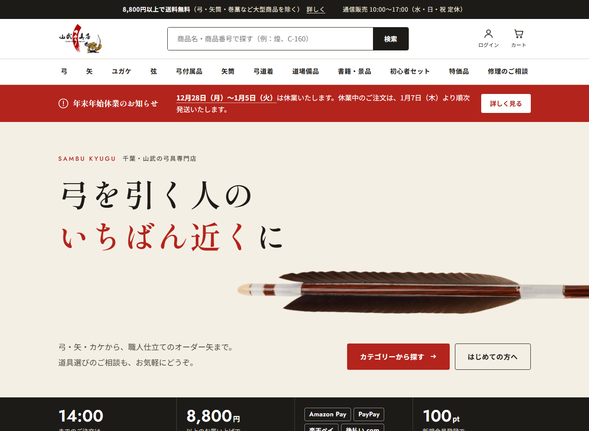
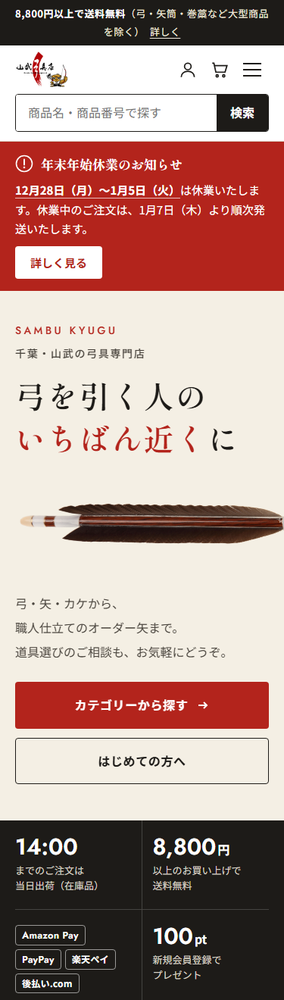
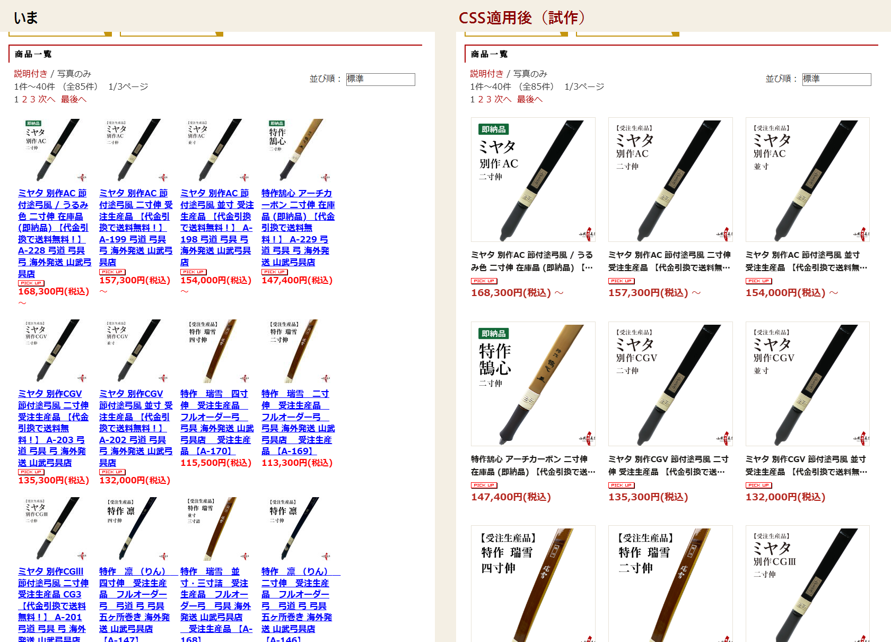
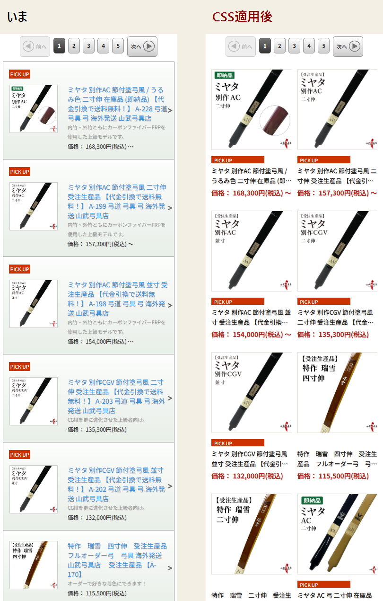

山武弓具店さま サイトリニューアル
PART 1
打合せで決まった「レイアウトはB案、色味とフォントはA案」の形です。PCとスマホは同じファイルで、画面幅に合わせて自動で切り替わります。

PC（上部）。全体は top/images/top_pc.png

スマホ（上部）。全体は top_sp.png
| 色 | 生成り（背景）・墨（帯・文字）・朱（強調・ボタン）の3色 |
|---|---|
| フォント | 見出し：Shippori Mincho（明朝）／本文：Noto Sans JP／数字・英字：Jost（すべてGoogleフォントで無料） |
| ページの並び | お知らせ帯 → ヘッダー（検索を中央に） → 臨時のお知らせ → ファーストビュー → 当日出荷・送料無料・決済方法・会員ポイント → カテゴリー → 目的から選ぶ → オーダー矢 → おすすめ商品 → 大会出店 → 読みもの → 店舗・お問い合わせ → フッター |
| 使っている技術 | HTML・CSS・ごく短いJavaScriptのみ。PHPなどサーバー側のプログラムは使っていないため、ショップサーブにそのまま載せられます。ログイン・カート・検索・お問い合わせは、ショップサーブ既存のページにリンクしています。 |
| 画像 | 今のサイトにある画像（www.sambu.jp 上）をそのまま参照しています。新しくアップする画像はありません。 |
top/top.css と top/top.js をサーバーにアップロードします（例：/css/top.css・/js/top.js）。部品の中の top.css・top.js の参照先を、アップロードした場所に合わせて書き換えます。parts/00_head.html を、トップページの <head> に追加します。parts/01_header.html と 02_alerts.html を、共通ヘッダーに置き換えます（お知らせ枠はカテゴリーメニューの直下）。parts/03_top-main.html を、トップページの本文に貼り付けます。parts/04_footer.html を、共通フッターに置き換えます（最後の <script> も含めて）。※共通ヘッダー・フッターを置き換えると、トップ以外のページにも反映されます。他のページの古いCSSとぶつかって表示が崩れないか、置き換えた後に商品ページ・カート周りもご確認ください。まずトップページだけで表示を確認し、その後に共通部分を置き換える進め方が安全です。
※CSS・HTMLを書ける具体的な場所（管理画面のどの項目か）は、ショップサーブの管理画面で確認のうえ進めます。
| 項目 | いまの状態 | お願い |
|---|---|---|
| 「匠の矢」のリンク先 | 今のサイトでもリンクが未設定のため、仮のリンク（#） | 正しいページのURLを教えてください |
| 読みもの2本のリンク先 | 「弓道のある暮らし」「世界に広がる弓道」が仮のリンク（#） | 各ページのURLを教えてください |
| フッターのリンク | 会社概要・特定商取引法・個人情報など7項目が、仮でお買い物ガイドにつながっています | それぞれの正しいページに差し替えます |
| おすすめ商品の価格 | 2026年9月時点の価格を文字で入れています | 価格が変わったら書き換えが必要です（ショップサーブの商品表示機能に置き換えることもできます） |
| 大会出店の予定 | 11/3・11/7・11/8 の3件 | 終わった予定は削除・次の予定に更新してください |
| 臨時のお知らせ | 見本として「年末年始休業（12/28〜1/5）」が表示される状態 | 実際の休業日に合わせて書き換えるか、公開時は hidden を付けて非表示にしてください |
| 文字入りのバナー画像 | 「目的から選ぶ」「オーダー矢」は、今のバナー画像（文字入り）を流用 | 文字の入っていない写真があれば差し替えると、より見やすくなります |
02_alerts.html の該当する <aside> から hidden を消し、見出し・本文・「詳しく見る」のリンク先を書き換えます。hidden を付け直します。data-until="2027-01-05" のように最終日を入れておくと、その翌日から自動で非表示になります。class="alert"）、配送遅延は墨色（class="alert alert--delay"）。2つ同時にも出せます。PART 2
ご要望の3点は、今のショップサーブのまま、CSSと短いJavaScriptを追加するだけで実現できます。商品データやページの仕組みは変更しません。
| ご要望 | PC | スマホ |
|---|---|---|
| 商品名の文字数をそろえ「…」で省略 | 商品名を2行で表示し、超えた分を「…」で省略（理由は下の「ご相談したいこと①」） | |
| 画像の高さをそろえる | すべての画像を正方形の枠にそろえる。縦長の画像も切らずに枠の中に収める | |
| 画像を大きくする | 4列 → 3列。画像は約130px → 約235px | 1列（画像は左に小さく） → 2列。画像は約100px → 約170px |
※大きく表示してもぼやけないよう、一覧用の縮小画像（PC 120px／スマホ 180px）を、すでにサーバーにある元画像（1500px）に差し替えます。画面に近づいてから読み込むので、表示の速さへの影響は抑えています。

PC（弓カテゴリー） 左：いま／右：CSS適用後

スマホ（弓カテゴリー） 左：いま／右：CSS適用後。PICK UPなどのタグは、画像の中の文字を隠さないよう画像の下に移しています。
| CSS | JavaScript | |
|---|---|---|
| PC | list/pc/list.css の中身を、PC版の一覧ページで読み込まれている店舗CSS（現在は /css/layout.css）の最後に追記 | list/pc/list.js を、PC版の共通部分（ヘッダーまたはフッター）で読み込み |
| スマホ | list/sp/list-sp.css の中身を、スマホ版の一覧ページで読み込まれている店舗CSS（現在は /css/accordion.css）の最後に追記 | list/sp/list-sp.js を、スマホ版の共通部分（ヘッダーまたはフッター）で読み込み |
table.itemList／スマホ：ul.itemlist）にだけ効くように書いています。カテゴリ内・検索結果の両方に反映され、それ以外のページは変わりません。CSSで省略できるのは行数単位です。文字数で切るにはJavaScriptが必要で、全角と半角（英数字・記号）が混ざると見た目の長さがそろいません。2行で省略すると、PCは1行あたり約16文字×2行で、ご希望の30文字前後になります（スマホは約13文字×2行）。
今の商品名は「ミヤタ 別作AC 節付塗弓風 … 【代金引換で送料無料！】 A-228 弓道 弓具 弓 海外発送 山武弓具店」のように、商品番号や検索用のキーワードが後ろに付いています。2行で省略すると、商品番号が見えなくなります。
英語版（Shopify）のように 【A-228】を先頭に移すと解決します（例：「【A-228】ミヤタ 別作AC 節付塗弓風 うるみ色 二寸伸 在庫品」）。ただし、検索用のキーワードを商品名から外すかどうかは、検索順位への影響もあるため、あわせてご検討ください。
2列にすると1商品あたりの幅が狭くなるため、一覧ではキャッチコピーを表示しないようにしています。商品ページには今まで通り表示されます。一覧でも表示したい場合は調整できます。
画像が大きくなることで、「受注生産品」「即納品」「二寸伸」など、画像の中に入れている文字がはっきり読めるようになります。